With iSphere RSE Filter Management you can export some or all filters from your workspace to a repository. A repository is an XML file on your local PC or a network drive. You can then import some or all filters from a repository to your workspace. The repository can act as a backup for your filters.
Here are some other scenarios where you might find Filter Management useful:
To open the iSphere RSE Filter Management dialog, click on the Sun icon in the upper right corner of the Remote Systems view, or select RSE Filter Management from the iSphere menu.
You now need to specify what you want to manage, and also the repository name:
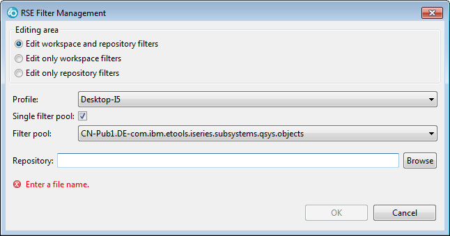
The filters in the workspace and in the repository will be displayed in up to four separate horizontal panes.
The next two option, Edit only workspace filters and Edit only repository filters are suitable for removing filters from the workspace or the repository.
If this is unchecked, then all filters will be considered for action and the connections between filters and filter pools will be saved.
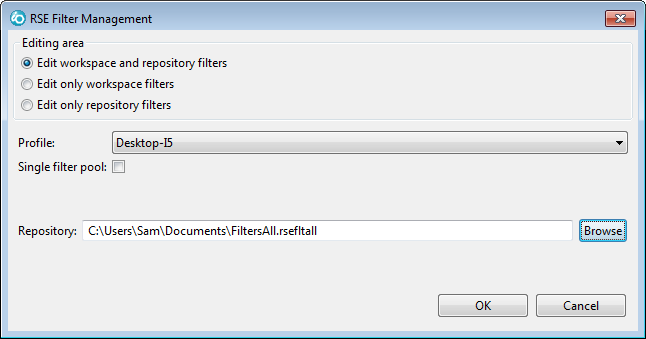
When we click [OK] we get a screen like this:
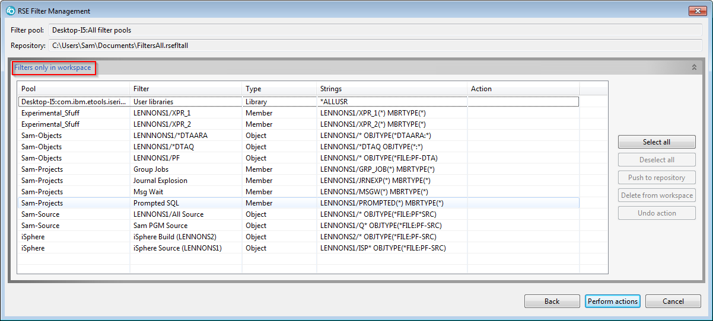
Since this is an export to a new repository, there is only one pane, showing the filters in the workspace.
Click [Select all] and all the filters are selected. (Note that you can also select filters in the traditional way, by clicking on them and using the Shift and Ctrl keys.)
All the action buttons on the right are now activated:
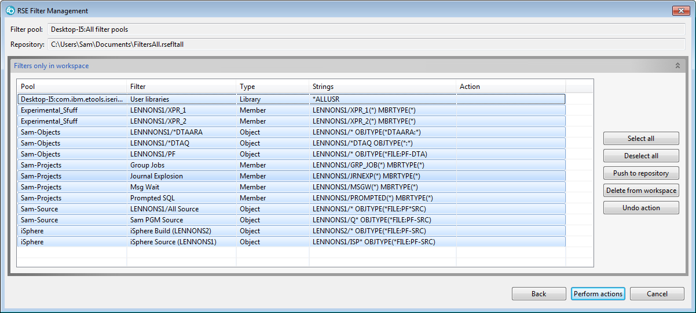
Click the [Push to Repository] button and the action column is populated for all selected flters:
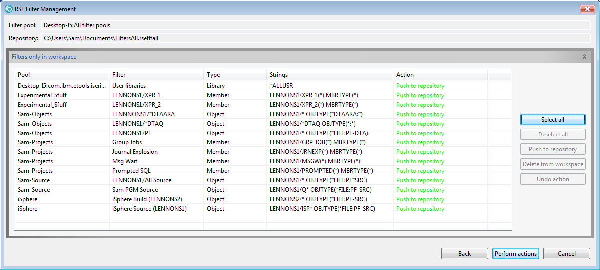
Now click the [Perform action] button at the bottom left. You get a confirmation prompt :
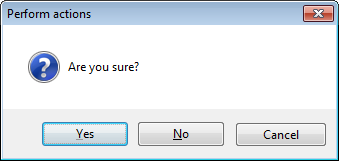.
If you click [Yes] the repository is updated.
If you click [No] you get back to the editor.
If you click [Cancel] nothing is updated and the editor is closed.
Now when we click [OK] we see this:
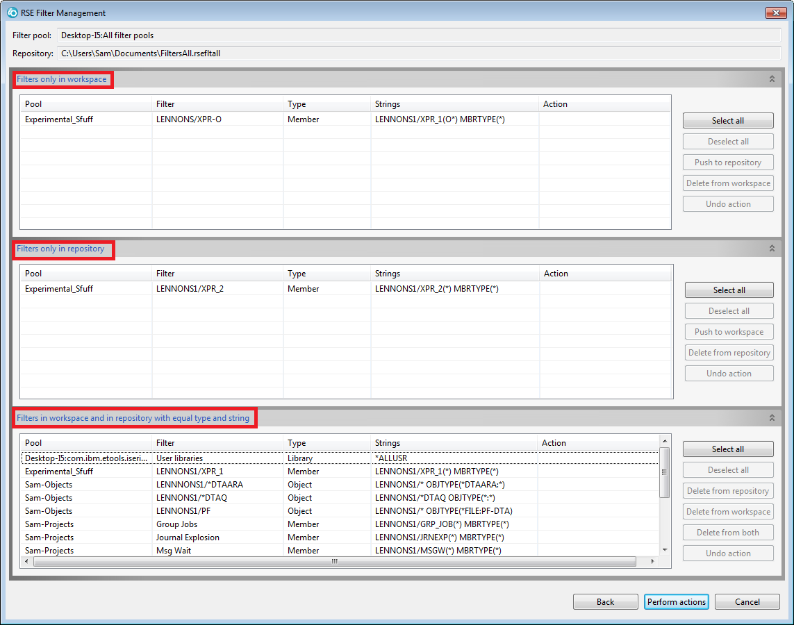
The 3 horizontal panes show the differences and the similarities between the workspace and the repository.
By selecting filters and setting the desired Action using the action buttons on the right, we can bring the workspace and repository into synch:
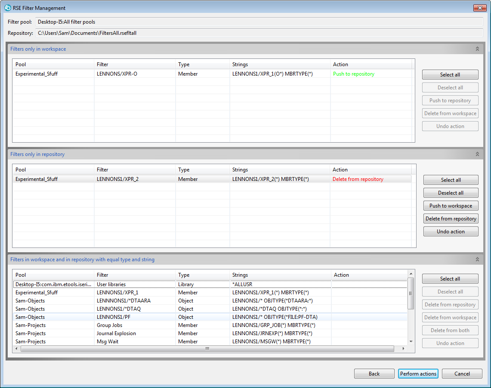
This is a rather simple example and it might have been easier to just export all filters to a new repository, but you have flexibility in managing as you choose. Note the actions you can define in the Action column:
A filter pool is a group of filters. If you end up with many filters, you can group them into filters pools. A filter pool can also be used in one or more connections.
When you restore a filter or a filter pool it may be necessary to assign it to a connection.
Suppose we create a brand new workspace but have not yet created a connection, but we want to import our filters. By setting up to manage like this, we can import all our filters:
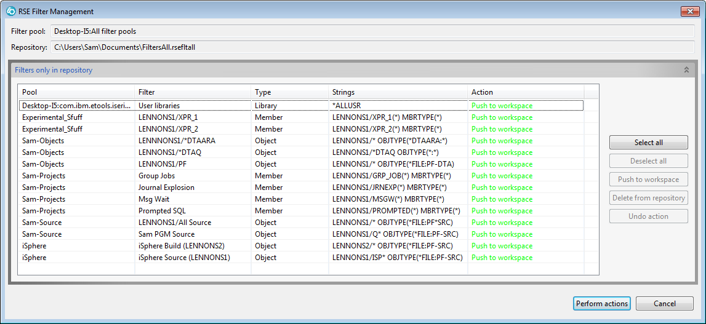
If we go to the RSE view, we do not see any filters or filter pools:
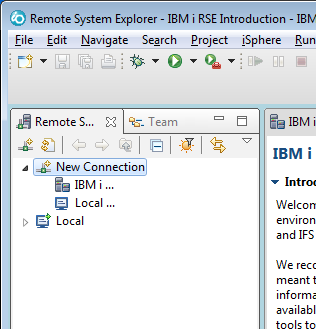
However, if we switch to the Team view, we can see that the filters and filters pools are there.
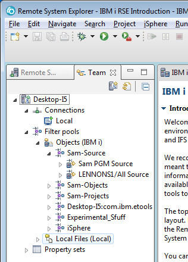
We create a connection in the RSE view and then use the View menu to Show Filter Pools:
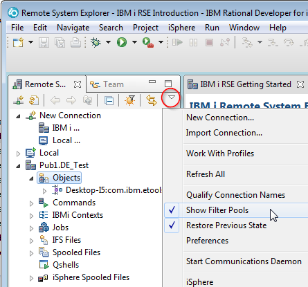
Now we can right click on Objects and click on Select Filter Pools:
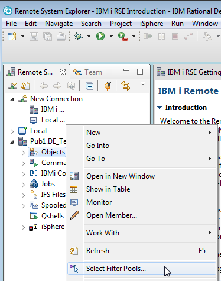
Then pick which filter pools will be assigned to this connection:
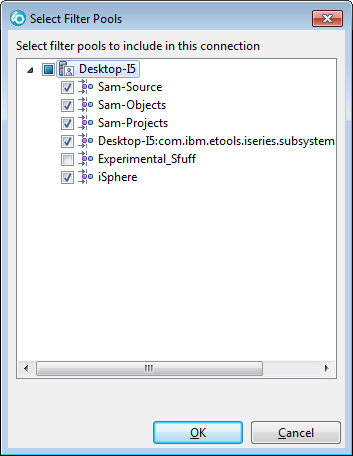
Alternatively, you can also assign filters one at a time by creating a new Filter Pool Reference:
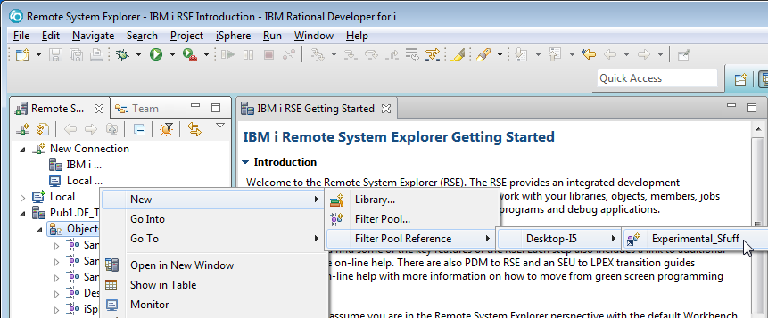

Filters you chose to be restored will end up in this filter pool, even if they were saved from another filter pool:
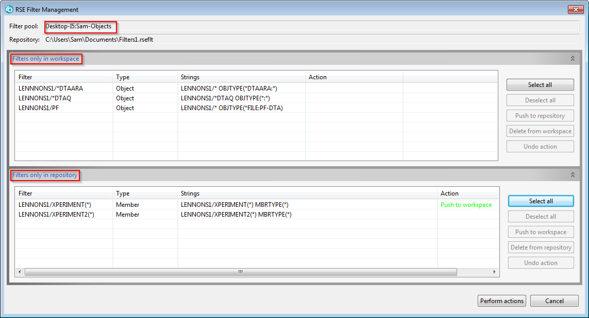